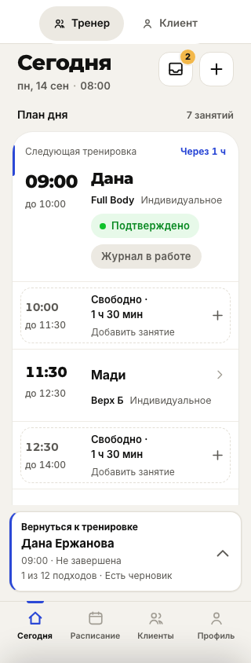
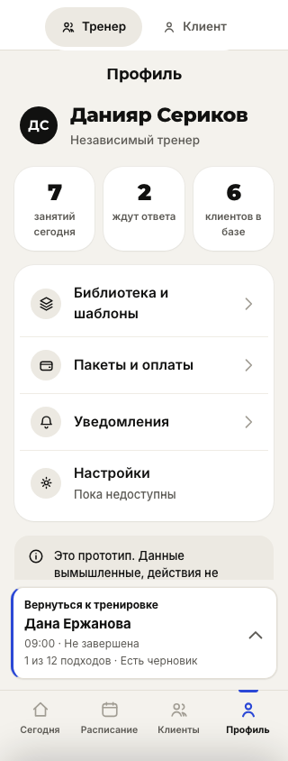
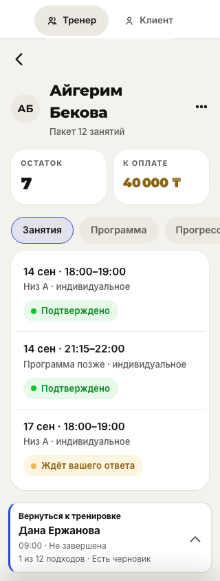
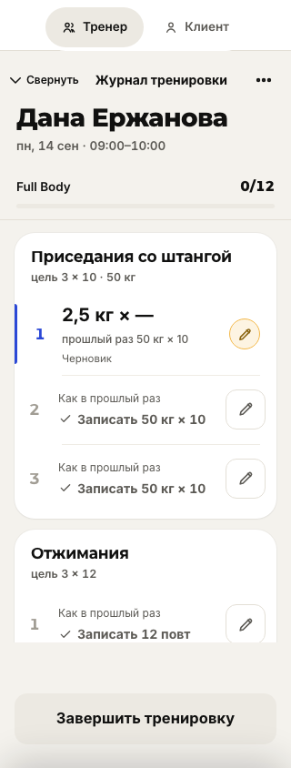
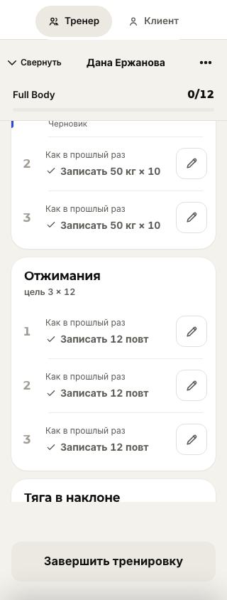
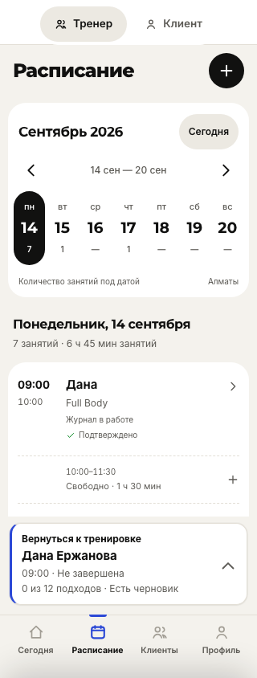
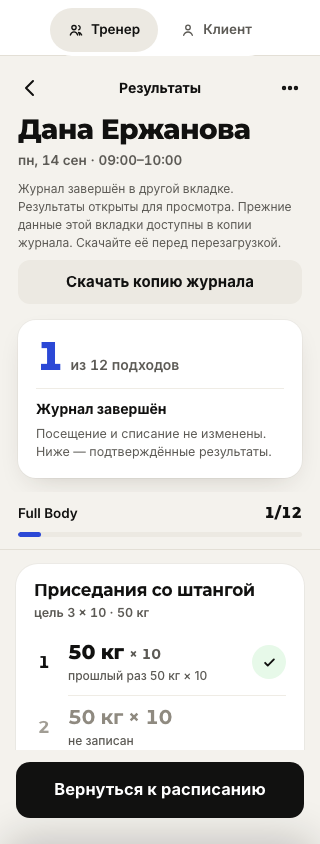

Общий обзорСвернуть и вернуться
Тренировка остаётся отдельным рабочим окном. «Свернуть» открывает «Сегодня», а полоса возврата остаётся доступной в других разделах. Возврат сохраняет участника, черновик и прокрутку текущего сеанса.
320 px
Рабочее окно: «Свернуть» вверху Тренировка свёрнута: можно работать с расписанием
Тренировка свёрнута: можно работать с расписанием
Возврат остаётся доступным в профиле
Карточка другого клиента не теряет текущую тренировку
Время занятия и черновики всех участников В строке виден введённый черновик
В строке виден введённый черновик
Имя остаётся в шапке при прокрутке
После завершения другого журнала возвращается Дана
Завершение во второй вкладке: результаты и копия местных правок
Снимки Chromium от 24 сентября 2026. Включены исправления ревью Claude. Это действующий прототип, не проверка физического телефона. После перезагрузки журнал восстанавливается, позиция прокрутки — нет.